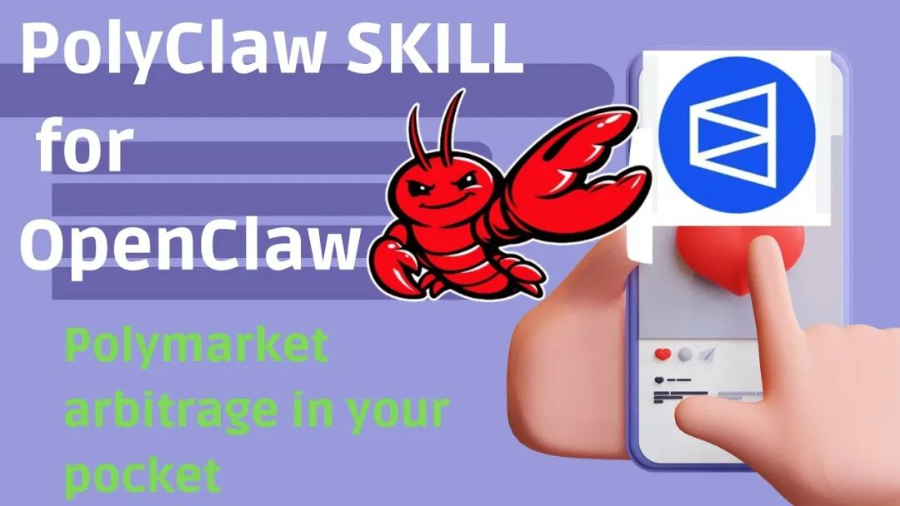
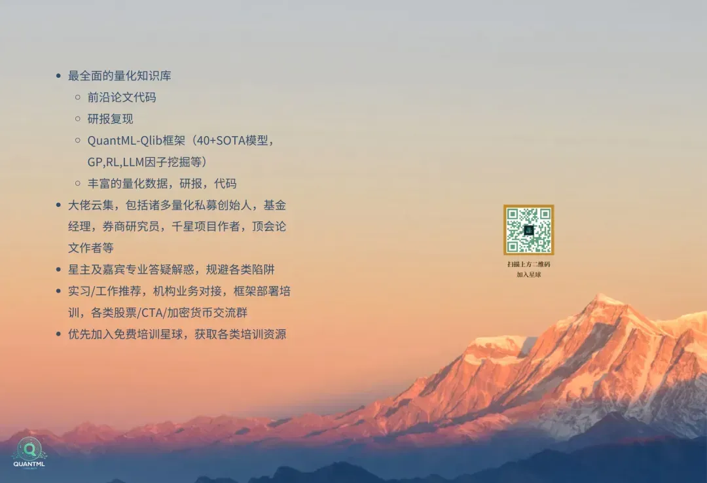

2026年，“智能体金融”（Agentic Finance）彻底火了。现在只要你在AI Trading圈子里混，绝对躲不开 Polymarket 和 OpenClaw 这两个词。
一边是估值狂飙到 90 亿美金、流动性大到惊人的预测市场 Polymarket；另一边是短短 60 天在 GitHub 上狂揽 17.9 万星、增长速度吊打 Kubernetes 的本地 AI 神器 OpenClaw。
网上的各种教程和社交媒体里，到处充斥着“10岁小孩写个脚本月入数万”的暴富爽文。但兄弟们，醒醒吧。这背后根本不是什么低门槛的被动收入，而是极其残酷的高频交易绞肉机，以及一不小心就能把你全副身家掏空的黑客黑洞。
今天，我们跳过那些晦涩枯燥的技术概念，直接扒一扒 OpenClaw 在 Polymarket 上的真实赚钱套路、被机构按在地上摩擦的残酷真相，以及近期大爆发的底层安全危机。

第一部分：“零手续费”的幻觉与高频降维打击
说起 Polymarket，很多人觉得它最大的优势就是“零手续费”（只在提现时收约2%）。没有了传统交易平台的手续费摩擦，听起来简直是套利天堂对吧？
但你以为你的竞争对手是其他在家用云端跑 Python 脚本的散户？错得离谱。
在这片没有摩擦力的黑暗森林里，你面对的是武装到牙齿的机构级高频交易系统（HFT）。这帮顶级掠食者用内存安全、执行极快的 Rust 或 C++ 写底层，服务器直接怼在靠近网络骨干的数据中心，拉着昂贵的私人专线直连 Polygon 节点，把交易延迟压到了亚毫秒级（Sub-millisecond）。
在绝对高效的市场里，只要出现哪怕一丁点因为信息差导致的定价偏差，这帮高频机器瞬间就会把利润全部吸干。你想靠调用大模型 API 、慢吞吞的脚本去抢肉吃？大概率只能沦为他们收割的流动性养料。
第二部分：OpenClaw 与 PolyClaw 插件的真实战力
既然高频打不过，为什么 OpenClaw 还能这么火？因为它的核心思路是“另辟蹊径”。
OpenClaw 主打“本地优先”（Local-first），它通常跑在你的 Mac Mini 里，能直接操控浏览器和终端。这种物理隔离不仅保护隐私，还能完美绕过各种云端机器人的反爬验证机制。
当它配上专门用来打 Polymarket 的 polyclaw 技能包后，就成了一个不知疲倦的无情交易机器。由于 Polymarket 的机制比较特殊，你不能直接“买”某个立场，而要把 USDC.e 拆分（Split）成 YES 和 NO，再把不要的那一边卖掉。人工干这事儿又慢又繁琐，而 polyclaw 插件能在后台极速完成这一系列链上链下的撮合动作。
更狠的是它自带的大模型对冲扫描。传统量化只能算价格相关性，但接入大模型后，OpenClaw 能直接读懂事件背后的“逻辑必然性”。它会全网扫描热门市场，自动帮你找到覆盖率高达 95% 以上的无风险或低风险对冲组合，这才是真正的 AI 降维打击。
第三部分：实战指南：手把手教你配置 PolyClaw 交易环境
既然说到了 polyclaw 这么神，那到底怎么跑起来呢？很多小白一听要在本地跑 AI 就头大，其实现在的部署门槛已经低得令人发指了。下面我给大家来个极简版的“开箱教程”。
1. 一键傻瓜式安装 vs 极客手动部署 如果你是纯纯的小白，最推荐的玩法是借助 Simmer.markets 这类集成服务平台。你只需要打开 Windows 的 PowerShell 终端，复制粘贴一行代码：iwr -useb https://openclaw.ai/install.ps1 | iex，等它下载完环境后，再输入 openclaw onboard 启动向导。接着把系统生成的一长串配置指令扔进你的 Telegram 机器人里，你的专属打工人就上线了。
当然，如果你是个极客，想把代码攥在自己手里，可以直接通过 ClawHub 官方源安装：执行 clawhub install polyclaw，然后进入目录运行 uv sync 即可搞定依赖。
2. 核心配置文件（openclaw.json）的“三件套” 环境搭好后还没结束，想让它真刀真枪地上场，你得在系统的环境变量文件 openclaw.json 里填好它的三件核心武器：
CHAINSTACK_NODE：Polygon 链的高速 RPC 节点地址，用来让智能体极速读取链上数据并抢跑提交订单。 POLYCLAW_PRIVATE_KEY：你的 EVM 交易钱包私钥。（这里一定要划重点：千万别放你的主钱包私钥，只放小额 USDC.e 和 POL 测试即可，被黑客偷了也不心疼）。 OPENROUTER_API_KEY：接大模型的 API 密钥，用来启动那个牛逼的逻辑对冲分析（Hedge Discovery）功能。
另外，如果你的 IP 总是被 Polymarket 的 Cloudflare 防护盾给限制（CLOB 订单频繁失败），记得加上 HTTPS_PROXY 变量配置一个动态代理。
3. 首次上链授权（最容易卡关的一步） 钱包里充好 USDC.e 和一点当 Gas 费的 POL 后，千万别急着发指令。在第一次实盘前，你必须在终端跑一行代码：uv run python scripts/polyclaw.py wallet approve。这步会一口气向 Polygon 网络提交包含条件代币框架（CTF）、交易网关等 6 笔复杂的合约授权，大概消耗 0.01 POL 的真实 Gas 费。搞定这步，系统才能真正拿到花你钱的权限。
4. 日常调教指令
配置全通后，剩下的就是一句话的事了。你可以用命令行或者自然语言让它干活：
找热点市场：polyclaw markets trending。 直接下单：比如买 50 刀的 YES 立场，直接输入 polyclaw buy <market_id> YES。智能体会在后台自动帮你把 50 刀 USDC.e 拆分，然后把不要的 NO 筹码通过订单簿（CLOB）卖掉，干净利落。 查查盈亏：随时输入 polyclaw positions，它就会调出你目前的持仓和实时 P&L 数据。
第四部分：搞钱策略大赏：天气、预言机与情绪收割
实战中，这帮极客到底是怎么赚钱的？
1. 降维打击的气象套利 这是目前最简单粗暴的赚钱法。散户在 Polymarket 上赌天气，往往靠感觉瞎猜或者看滞后的天气预报。而顶级玩家的 OpenClaw 智能体，直接对接着美国国家海洋和大气管理局（NOAA）最底层的科学模型。气象数据一更新，机器人几毫秒内就能发现 Polymarket 上的定价错误。有人靠这个思路死磕伦敦天气池，硬生生把 1,000 美金刷到了 2.4 万美金；还有人多城并行，静默抽走了 6.5 万美金的利润。
2. 预言机滞后（Oracle Gap）与终局捡钱 大交易所（比如 Phemex）的合约价格对突发地缘政治新闻的反应在毫秒级，而 Polymarket 的赔率调整往往会慢上几百毫秒甚至几秒。OpenClaw 全天候盯着大所的盘口，一旦异动，立刻在 Polymarket 散户反应过来之前抢跑低价筹码。 另外还有个大佬最爱的“终局交易”策略：当事件基本落埃（比如大选点票 99%）、价格涨到 0.95 美元以上时，智能体大手笔扫货，绝不承担反转风险，纯粹用几个小时的时间换取剩下那 1% 到 5% 的确定性利润。
3. 情绪逆向（AI Contrarian） 在市场恐慌踩踏时，单纯的技术套利已经不够了。实盘里有种策略利用自然语言处理（NLP）抓取全网的 FUD（恐慌）情绪，当大众因恐慌导致赔率极度扭曲时，果断逆向对赌。这套策略曾跑出过 11000% 的夸张 ROI。但前提是，你的机器人得有强大的“熔断机制”——连亏三次必须自动拔网线，遇到震荡市必须主动休眠，否则很容易被单边行情一波带走。
第五部分：安全大翻车：你盯着利润，黑客盯着你的私钥
本来大家都在闷声发大财，结果今年初，出大事了。中国工信部 NVDB 甚至直接发布了针对 OpenClaw 的国家级网络安全预警。
你以为只要不乱点链接就安全了？太天真了。最近安全机构曝光了一个名为“ClawHavoc”的超大型供应链攻击行动，黑客们在 OpenClaw 的官方技能市场（ClawHub）里，悄悄塞进了整整 341 个恶意插件！
这帮黑客专门盯上了那些 24 小时开机跑智能体的电脑（尤其是 Mac Mini）。这些木马被精心伪装成 Polymarket 交易辅助工具、推特账号管家甚至是钱包追踪器。你一旦中招安装，它就会利用 OpenClaw 的高系统权限，偷偷把你浏览器里免密登录的 Cookie、环境变量里的 API Key，甚至是存放在本地的钱包私钥，统统打包传走。
为了补救，OpenClaw 的创始人 Peter Steinberger 赶紧找来了谷歌旗下的 VirusTotal 合作，要求所有上传的插件必须经过 SHA-256 哈希比对和代码级扫描。安全社区也火速推出了像 Clawdex 这样的查杀工具，帮你在安装插件前做体检。但说实话，由于 OpenClaw 底层的“信任边界”本来就模糊，只要你把私钥和高权限交给了 AI，这颗雷就一直悬在头顶。
第六部分：活下去的进化之路：IronClaw 与 Pico Claw
在这个稍有不慎就倾家荡产的黑暗森林里，严肃的机构玩家和顶级极客们已经开始换装备了。
觉得 OpenClaw 像在“裸奔”的 Near.AI 联合创始人 Illia Polosukhin，直接用内存极度安全的 Rust 语言重写了一套 IronClaw。它的核心哲学是“把一切关进笼子里”。所有第三方插件都必须在 WebAssembly (WASM) 沙盒里运行；更绝的是，大模型自始至终在物理层面都碰不到你的私钥，彻底断绝了黑客通过“提示词注入”套取你资产的可能。
而另一端，Pico Claw 则把轻量化做到了极致。它针对 OpenClaw 过于臃肿的毛病，用 Go 语言编译成单一文件，内存占用被丧心病狂地压到了 10MB 以下 ！这意味着你花 10 块钱买个廉价的微型开发板，就能跑起一个能接外部 LLM、能自动定时交易的 AI 节点，堪称散户分布式部署的神器。
结语
Polymarket 加 OpenClaw，确实是目前圈内最好玩、也最残酷的博弈修罗场。但在这个场子里，从来没有“几行代码就能永远躺赚”的神话。
如果你想在这个极度内卷的赛道上玩下去，请收起你对“零摩擦套利”的轻视，把你的服务器拉到离节点最近的地方；最重要的是——看好你的私钥，千万别让你的 AI 成了洗劫你自己的帮凶。
关于QuantML
QuantML 是链接全球顶尖量化人才的高端社群，我们聚焦于机器学习在量化投资中的最前沿应用。
核心价值：
顶级圈层： 社区涵盖头部机构从业者、知名私募创始人、机构量化负责人，基金经理，券商金工分析师、GitHub千星作者及顶会学者构成。 每日高价值内容： 持续分享前沿论文、论文研报复现、模型代码、核心Alpha因子以及QuantML-Qlib框架等。
加入我们，与最强大脑同行，洞见量化未来。
